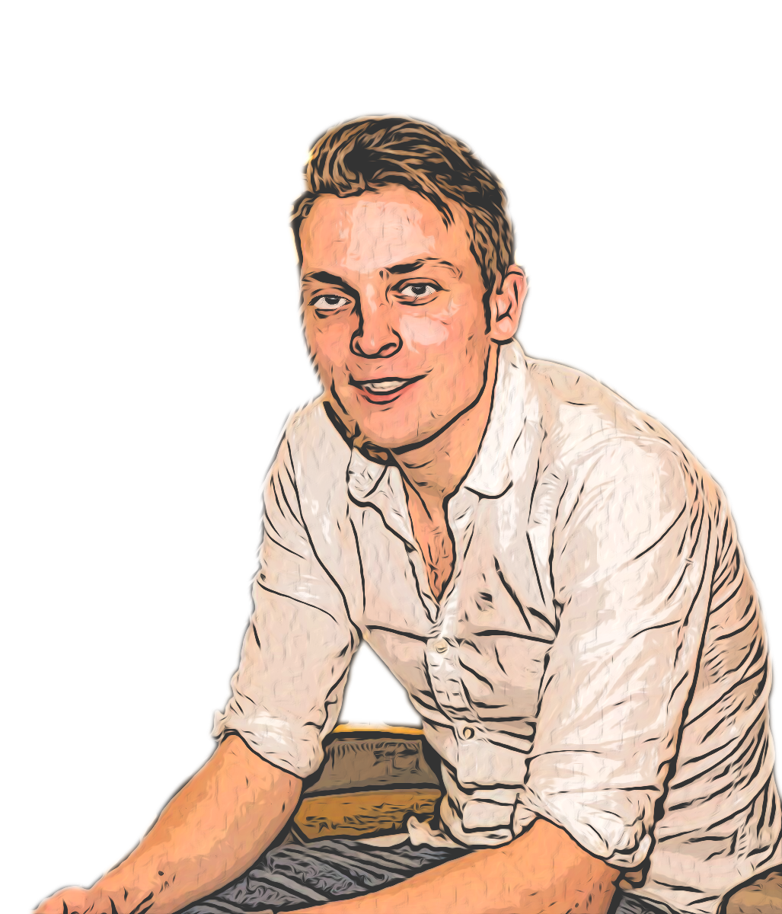
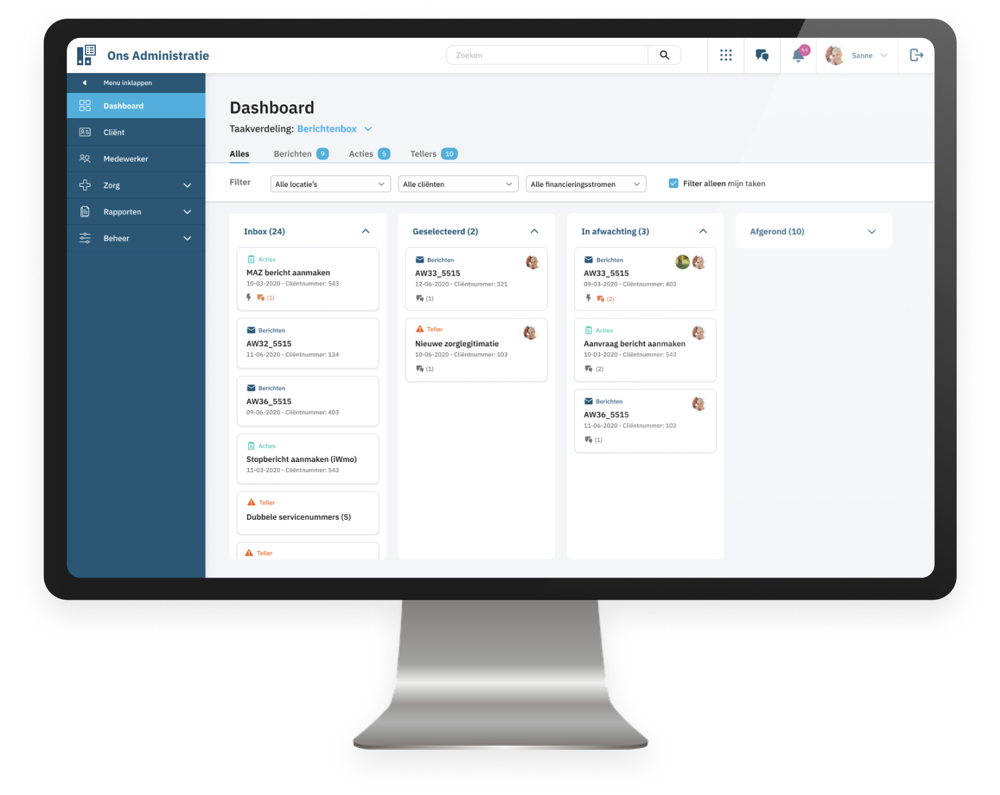
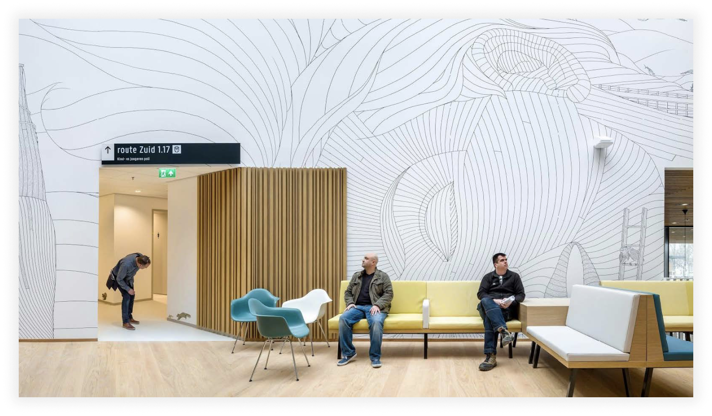
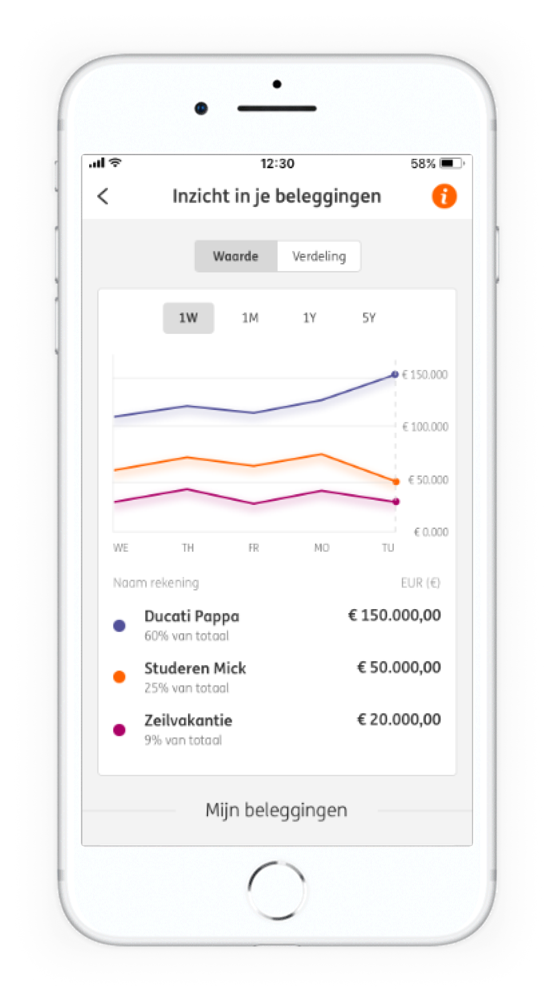
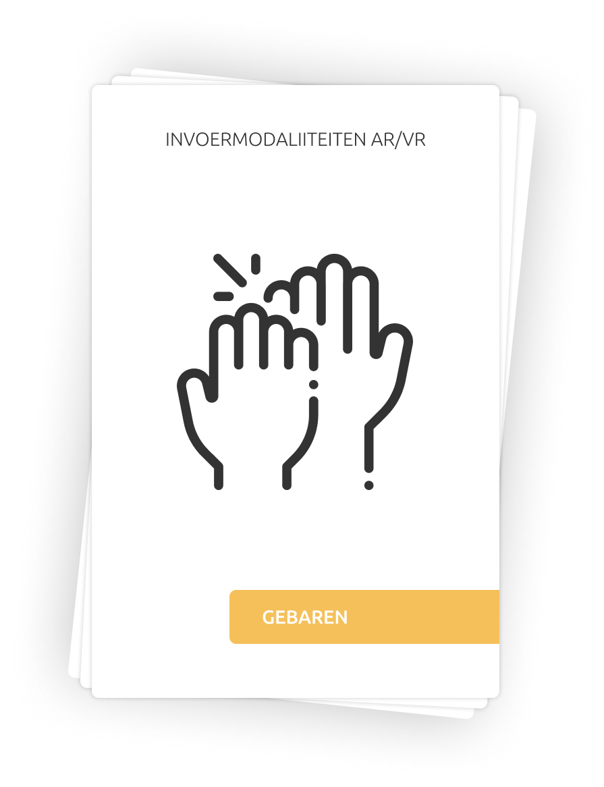

Hey, ik ben Jari!
Interactie ontwerper, Gebruikers onderzoeker, & (binnekort) front-end ontwikkelaar!
Met mijn
werk
wil, door middel van de nieuwe technologieën, afstanden verkleien en mensen bij elkaar brengen.
Bekijk mijn werk

Uitgelichte projecten

Dashboard Ons Administratie
De ontwerpvraag vanuit Nedap was: ‘Herontwerp vanaf het eerste scherm dat medewerkers van
de administratie zien na inloggen de ‘to do flow’, zodanig dat
het overzichtelijk is welke taken er moeten gebeuren, zij hun
taken kunnen organiseren en vanuit hier met een (gekozen)
taak kunnen starten.’
Gebruikers onderzoek
UX-design
UI-design
Bekijk
Case Study

Embedded Media Objects
Vanuit de opdrachtgever Silo kwam de vraag om te onderzoeken hoe we embedded media objects
kunnen inzetten om bij te dragen aan een zogenaamde ‘healing environment’. Hierbij kan
edacht worden aan toepassing in zorginstellingen zoals een ziekenhuis, verzorgingshuis of
revalidatiecentrum.
Gebruikers onderzoek
UX-design
Product design
Bekijk Case Study

Investment overview
Vanuit ING Nederland kwam de vraag: “Hoe kan de gebruiker een beter -specifieker- overzicht
krijgen van zijn investeringen.”
Bekijk
Case Study

Invoermodaliteitkaarten
Voor de minor Beyond the hype hebben we, Christiaan en ik, onderzoek gedaan naar verschillende
input modaliteiten voor Augmented Reality en Virtual Reality, dit hebben we gedaan om meer
informatie te krijgen over de mogelijkheden van Mixed Reality.
Desk-reseach
Product design
Bekijk
Case Study